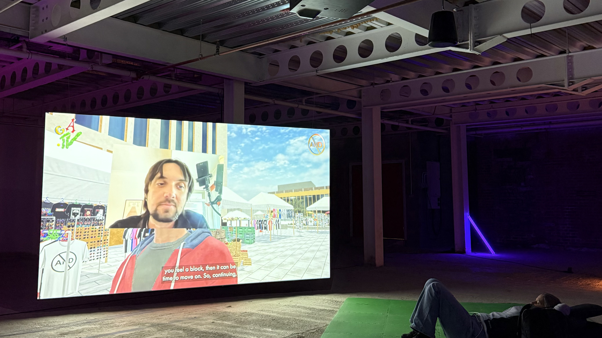
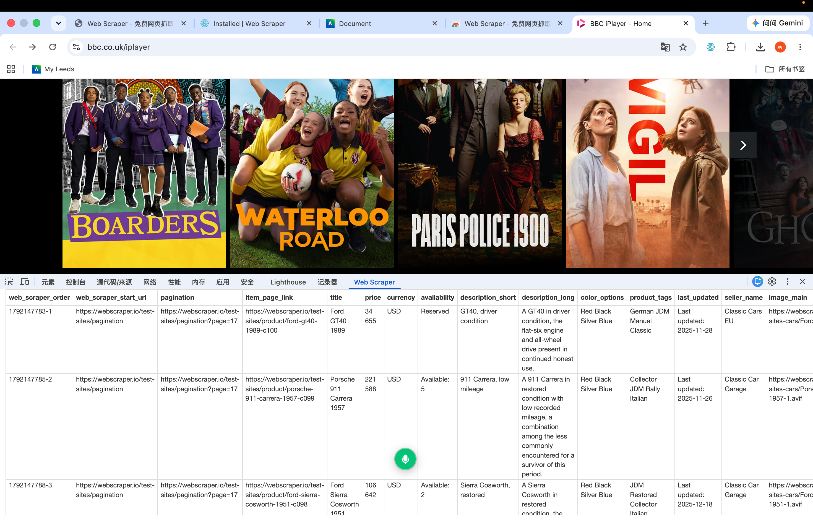

Barnsley
Joined the AND Festival in Barnsley—an incredible showcase of digital interactive art. A memorable day filled with creative media, thoughtful installations, and visual inspiration.
Hi, I'm Eliora. A Product and Interaction Design graduate, now exploring Digital Media Technology in Leeds. This is my digital space to record my UK journey, travel photography, and academic coursework.

Joined the AND Festival in Barnsley—an incredible showcase of digital interactive art. A memorable day filled with creative media, thoughtful installations, and visual inspiration.

A day at the place many people associate with Mr Darcy and Pemberley. A few photos, beautiful scenery, and impressions from my visit.
A hands-on digital media workshop project exploring web structure deconstruction, sitemap configuration, and automated data harvesting.

Successfully configured selectors using the Web Scraper browser extension to harvest structured content from the target web page, exported as a clean CSV dataset.
A space to document my learning journey, track my weekly progress, and reflect on course feedback.
This week introduced us to digital practices and the relationship between technology and society. Instead of viewing technology in isolation, I learned to think critically about how digital media both shapes and is shaped by our social context. It’s a great starting point for exploring digital media technology through both theory and practical work this semester.
This week focused on website structures, the basics of HTML and CSS, and different models of web publishing. Coming from a background in App UI design, I initially found creating a website through CampusPress and GitHub to be an unfamiliar and challenging experience. Although I had some previous experience with digital interface design, I realised that building a website involved more than simply designing its visual appearance. It also required an understanding of the underlying technical structures and processes that make websites function and become accessible online.
After experimenting with both platforms, I ultimately decided to use GitHub to build my portfolio. I plan to continue developing my skills by combining AI tools with classroom tutorials. Through this experience, I also became more aware of the importance of paying attention to details in visual design, textual organisation and overall website structure. More importantly, it challenged my previous understanding of the Internet as simply an open space for accessing and sharing information. I began to recognise that digital environments are constructed through coding, design decisions and publishing systems, all of which influence how information is organised and presented. This experience also made me reflect on Gillespie's (2013) argument that algorithms should not be understood as entirely neutral technical processes. He explains that decisions about how information is selected, categorised and presented involve human and institutional choices. Although my experience of creating a website mainly focused on its technical and visual aspects, it helped me appreciate that the design of digital spaces is closely connected to how people interact with information. For example, decisions about website layout, navigation and content organisation can influence what users notice and how they engage with the information available. This connects with Gillespie's broader argument that technological systems do not simply deliver information objectively, but also shape how information becomes visible and relevant to users. Overall, this week encouraged me to look beyond the visual interface of digital platforms and pay more attention to the structures and decisions behind them. It also made me consider how much influence website creators and platform designers have over users' online experiences. I would like to explore further whether users are always aware of how these design and algorithmic decisions shape the information they encounter, and to what extent they can exercise control over their own online experiences.This week, we explored the basics of web scraping and learned how to transform unstructured web content into structured, analysable data (in CSV format) using tools such as browser extensions. During the practical workshop, I used the Web Scraper extension to experiment with collecting information from the BBC website. I then organised the extracted information into a dataset and successfully incorporated the data and visualisations into my personal portfolio. The video by Chapple (2022) also helped me understand the basic process of web scraping and how information can be extracted from websites for further analysis. Through this practical experience, I realised that web scraping is not simply about collecting information, but also about transforming online content into data that can be organised, compared and interpreted.
One of the most important things I learned from scraping the BBC website was that online information is not automatically available in a form that can be directly analysed. It needs to be extracted, structured and organised before meaningful patterns can be identified. This made me think more critically about how digital data is produced and collected. As discussed by Venturini and Rogers (2025), web scraping involves working with both documents and interfaces, which means that the way information is presented online can influence how researchers access and collect it. However, I also realised that web scraping has several technical and methodological limitations. Writing custom Python scripts for web scraping can be quite challenging and time-consuming, as it involves dealing with different libraries, coding techniques and environmental setups. Therefore, I decided to focus on developing a basic understanding of Python-based scraping rather than exploring it in depth at this stage. By comparison, using existing visual tools was more efficient and intuitive for me. Nevertheless, I began to realise that the convenience of web scraping tools does not necessarily guarantee the completeness, accuracy or representativeness of the data collected. The results may be limited by the BBC website's structure, the information available on the pages I selected and the specific criteria used to collect the data. This made me question whether the dataset I collected could fully represent the wider range of information published by the BBC. Another important aspect of this week's learning was the ethical dimension of web scraping. Although I did not necessarily encounter a direct ethical problem during the practical task, I became more aware that publicly accessible information is not automatically free from ethical considerations. Collecting and using online data may raise concerns about users' privacy, consent and how their information is stored or shared. For example, even when information is publicly visible on a website such as the BBC, researchers should still consider whether it is appropriate to collect, analyse or republish it. This is particularly relevant when publishing research findings or datasets on a personal portfolio website that can be accessed by others. Venturini and Rogers (2025) encouraged me to consider web scraping not only as a technical method, but also as a research practice with legal and ethical responsibilities. Overall, this week changed my understanding of online data collection. I previously thought of web scraping mainly as a convenient way to gather large amounts of information, but I now recognise that the process involves important decisions about what data is collected, how it is structured and what conclusions can be drawn from it. I would also like to explore further how researchers can balance the efficiency of automated data collection with the need to protect individual privacy. More broadly, when online information is publicly accessible, where should we draw the boundary between what we can collect and what we should collect?This week's workshop changed my understanding of data collection. Previously, I tended to see data as information that could be gathered, organised and analysed using digital tools. However, the workshop helped me recognise that data is not simply discovered in a neutral form. The decisions we make about what to collect, how to classify it and which information to exclude can shape the conclusions of our research.
One of the most important things I learned from the workshop was that creating a dataset involves ethical and interpretative decisions, rather than just technical processes. Our group used Communalytic to collect and analyse Reddit discussions relating to students' experiences of generative AI, academic misconduct and exam stress. During this process, we experienced a sense of intrusion when reading posts containing personal concerns, such as anxiety about AI cheating and fear of academic misconduct. Although these discussions were publicly accessible, I realised that users might have shared their experiences expecting support from an online community, rather than anticipating that their posts would become research data. This raised an ethical question about the difference between publicly available information and informed consent. To reduce privacy risks, our group removed user IDs, exact timestamps and direct URLs from the collected data. We also used a five-variable coding dictionary to convert qualitative text into numerical values. This allowed us to organise individual posts into broader patterns without retaining unnecessary identifying details. However, I also realised that removing personal identifiers does not automatically resolve every ethical concern, particularly when the original discussions involve sensitive experiences. The main challenges of imagining, collecting and classifying data were deciding which experiences should be represented, how to translate complex narratives into fixed categories, and how to avoid losing important context during that process. For example, two Reddit users might both express anxiety about AI and academic integrity, but their concerns could arise from very different personal circumstances. Assigning numerical codes makes comparison easier, yet it can also make these differences less visible. I initially regarded numerical data as more objective, but the workshop made me question this assumption. The numbers may appear neutral, while the choices behind their creation remain subjective. This experience closely relates to D'Ignazio and Klein's (2020) discussion of binaries and hierarchies in Data Feminism. They argue that classification systems are connected to existing structures of power and can reinforce inequalities when complex identities or experiences are forced into restrictive categories. Hierarchies and binaries can emerge in data collection when researchers decide which categories are considered normal, which experiences are treated as exceptions, and whose perspectives are excluded altogether. Reflecting on our Reddit dataset, I recognised that our coding system was not simply a technical tool. It also reflected our own interpretations of students' experiences. Even when categories are designed with good intentions, they may fail to capture uncertainty, contradiction or perspectives that do not fit neatly into the available options. Crawford (2021) similarly challenges the idea that data exists independently of social and political structures. Her discussion of data as a form of classification and world-making helped me understand that collecting information also involves defining how people and their experiences become visible to researchers. Our workshop experience connected with both readings because it demonstrated how decisions about data collection and classification can influence what becomes measurable, what remains invisible and how particular groups are represented. This made me more aware of the responsibility researchers have when transforming human experiences into datasets. The readings also encouraged me to reflect on my everyday use of social media platforms. When using social media, I understand that certain information, such as my interactions, searches and viewing activity, may be collected to support platform functions and personalise content. However, I do not always know precisely how this information is processed, combined or used beyond the immediate recommendations I see. Although I accept some data collection when using digital services, I am not necessarily fully informed about how my behaviour is interpreted or how the resulting profiles shape my online experience. Personalised recommendations can make platforms more convenient, but they may also influence which perspectives I encounter and which content remains less visible. Overall, this week helped me move beyond thinking of data analysis as a process of extracting information and producing numerical results. I now understand that responsible data research requires attention to privacy, representation and the power involved in classification. In future projects, I want to consider not only whether data can be collected, but also whether collecting it is appropriate and how my methodological choices might affect the people represented. Two questions remain particularly important to me: When personal experiences are converted into numerical categories, how much meaning is lost in the process? And can publicly accessible social media data ever be considered ethically straightforward to use without the explicit consent of its original authors?In the workshop, we explored how data can be collected, organised and presented through visualisations. Our group created a dataset about the main barriers people experience when using AI and visualised 31 responses in a pie chart. The results showed that fear of policy violations and academic integrity was the most common barrier, with 15 responses (48.4%). This was followed by no clear barrier, with 9 responses (29%). Fabricated references or hallucinations received 3 responses, while lack of depth and other barriers each received 2. During my undergraduate studies, I had worked on data visualisation before, but I mainly thought it involved finding data and using design to create an attractive and creative chart. This workshop helped me realise that data visualisation is also about interpreting data, communicating findings and considering how audiences understand the information. I found the pie chart useful because it made the differences between categories easy to understand. However, the chart initially displayed only category numbers, without explaining their meanings. This made me realise that visualisations need clear labels and should be designed with the audience in mind. Feigenbaum and Alamalhodaei (2020) explain that data visualisation is not simply about presenting facts. Choices such as colours, categories and layout can influence how people understand information. Feminist data visualisation also encourages us to consider whose experiences are included or excluded and whether the data contains bias. I also looked at The Pudding's article Who Gets Shipped and Why? (Cai et al., 2024). I found its interactive visualisations effective because they allowed readers to explore different relationships in fanfiction. However, focusing on popular pairings may mean that less common relationships receive less attention. Overall, this workshop and reading helped me understand that data visualisation involves more than choosing a chart type. It requires critical thinking about data, representation, bias and the audience.

1. Data Collection and Manual Scraping
For this activity, I collected the latest 15 posts from 32 friends, giving me 480 posts in total. I used Sumpter's 13 categories to sort the posts and recorded the results in Excel.
I found manual scraping quite time-consuming because I had to look at every post and decide which category it belonged to. Some posts included several things at once, such as an outfit, a meal with friends and a travel photo. It was sometimes difficult to decide which category fitted best.
I realised that this process involved a lot of personal judgement, and different people might classify the same post differently.
2. Problems with the Categories
One of my biggest difficulties was deciding whether a selfie should be Lifestyle or a separate category. I usually put selfies under Lifestyle because they were often part of someone's daily life. But what about a photo of someone having dinner with friends, where the person is also the main focus? It is not always easy to decide.
I think adding a new category for selfies might make things even more confusing. Instead, it would be better to have clearer rules for deciding which category a post belongs to.
I also noticed that Politics/News and Local Events appeared less often in my data, while Lifestyle, Jokes/Memes and Product/Advertising were more common.
3. How Life Stages and Jobs Affect Social Media Posts
Something I found interesting was that people's posts seemed to be connected to their current stage of life and their jobs.
Friends who were still studying tended to share more daily life, travel and leisure photos. Perhaps this is because they have more free time and opportunities to travel during holidays.
Friends who had started working seemed to post less about eating out and having fun. They sometimes shared photos of dinners with friends, but I also noticed more work-related posts, including complaints about their jobs!
I also looked at some beauty influencers. They shared many more advertisements and product promotions, and often attended social events. This is probably because promoting products and attending events are part of their jobs.
This made me realise that what people post is not only about their interests, but also about their lifestyle and work. Of course, these are just my observations from a small sample.
4. How I Would Improve the Method
After finishing the classification, I realised that the main problem was not the number of categories, but that some categories were difficult to distinguish.
I would keep the original 13 categories but make the rules clearer. For example, I would look at the main purpose of a post: if it mainly shows someone's daily activities, I would put it under Lifestyle; if it mainly focuses on their appearance or outfit, I would consider its self-presentation aspect.
If a post contains several things, I would still choose only one category based on its main content. I would also make notes of difficult examples so that I could use the same rules throughout the process.
5. What I Learned from Changing the Method
This activity made me realise that the way we sort data can affect the final results. If I change the categories or the rules, the numbers in my spreadsheet will also change.
For example, putting all selfies under Lifestyle might hide how often people use social media to show their appearance and personal style. This is important because social media platforms also use categories to understand users and recommend content. If the categories are not accurate, the profiles they create might not show the full picture.
6. Can 15 Posts Represent Someone's Identity?
I don't think 15 posts can fully represent a person. People only share certain parts of their lives on social media, and many things about their personalities and real lives are not shown online.
However, these posts can still tell us something about their interests, lifestyle, relationships and jobs. From my observations, students, working adults and beauty influencers all shared quite different types of content.
Overall, I think social media posts can give us some idea of a person's identity, but they cannot tell us everything about them. This activity helped me understand that the way data is collected and sorted can affect how we see people online. Turning someone's life into numbers makes it easier to analyse, but it can also leave out many important details.


This week's activities made me think more carefully about how social media platforms collect and use our data, and how this information can shape the way we are seen online.
When exploring the platform's data inputs and outputs, I realised that social media collects more than just the posts we share. Our interactions and online activities can also help platforms build a profile of us. I found it interesting that the platform could use this information to decide what advertisements might be relevant to me. However, I also wondered whether this profile really reflects who I am, or only what the platform thinks I am interested in. One challenge was accessing and understanding this data. Although platforms collect a lot of information, it is not always easy to see how it is used or how decisions are made. This made me realise that users do not always have a clear understanding of how their online activities are turned into data and used by platforms. I also found categorising my friends' posts using Sumpter's 13 categories challenging. Some posts could fit into more than one category. For example, I was not always sure whether a selfie should be classified as Lifestyle or whether it represented self-presentation. I also noticed differences between students, working adults and beauty influencers. Their posts seemed to reflect their different lifestyles and jobs. This showed me that people's online content is influenced by their circumstances, not just their personal interests. I do not think these categories can fully represent someone's identity. Fifteen posts can show some of a person's interests, activities and relationships, but they cannot tell us everything about their personality or real life. The way we classify posts also affects the results, because different choices can create different profiles of the same person. The idea of the "shaky line" also made me think about how uncertain and incomplete our understanding of digital identity can be. We may try to use online data to draw a clear picture of someone, but people's identities are much more complicated and can change over time. This connects to my own digital practice because I also choose what to share online and what to keep private. The version of myself that appears on social media is only one part of who I am. Overall, this week's activities helped me understand that digital platforms do not simply show our identities; they also shape how our identities are interpreted through data and categories. I should therefore be more aware of what I share online and think critically about how platforms use my information. The short film *We Were Here* made me think about the relationship between humans and technology. It shows how people may feel when machines and AI start replacing human jobs. Although the story is presented in a funny way, it raises a serious question about what makes humans valuable. I think the "shaky line" reminds us that the boundary between humans and technology is not always clear. Technology can perform many tasks that were once done by people, but human experiences, emotions and creativity are still important. This also connects to our digital identities. Just as AI cannot fully replace or understand human beings, social media data cannot fully describe who we are. Our online profiles only show part of our lives, not our complete identities. It made me think that we should not rely too much on technology to define people. We should also consider the experiences and personal qualities that cannot easily be measured by data.